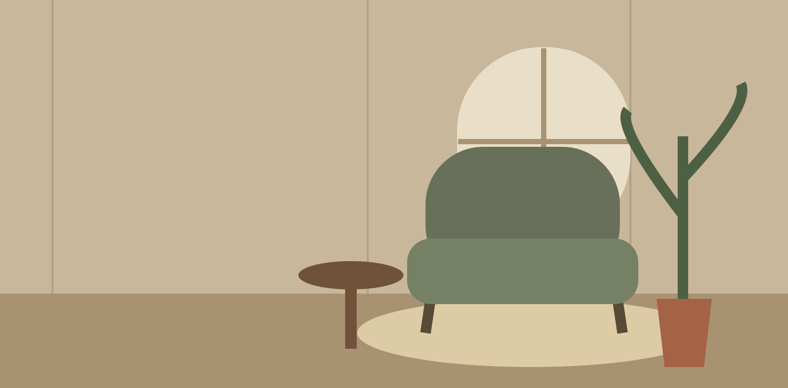

⌑
Furniture
A good seat changes everything.
Explore furniture →
THE ART OF SETTLING IN
Soft textures, earthy tones and pieces that make a room your own.
Find your fall feelingYOUR HOME, YOUR WAY
A gathering of distinctive finds for living, hosting and slowing down.
A good seat changes everything.
Explore furniture →Texture and shape for your favorite spaces.
Browse demo finds →Ground your room in natural tones.
Find a rug →Make the everyday table special.
Set the table →Small comforts, quietly considered.
Explore soft layers →A little discovery for the pantry.
Browse pantry finds →ROOM TO GATHER
Curves, color and a comfortable place to pause.
Shop accent chairs